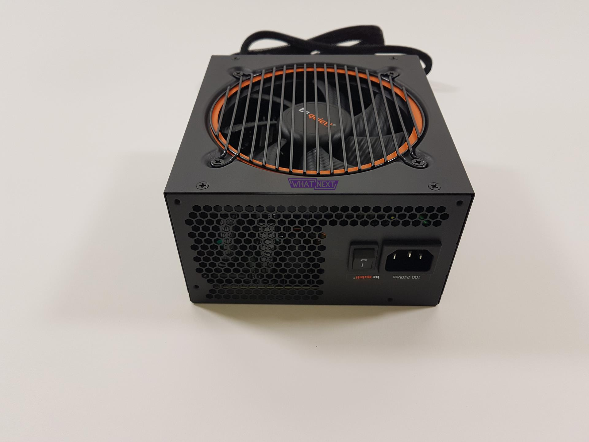

Naponska jedinica (PSU) energija za naš PC!
Naponska jedinica ili napajanje – PSU (Power Supply Unit) je jedan od ključnih dijelova računara, jer snabdijeva strujom sve dijelove sistema koji to zahtijevaju.
Koristi se i samo termin napajanje.
Naponska jedinica ili napajanje pretvara naizmjeničnu struju (AC) u jednosmjernu struju (DC) neophodnu da bi komponente računara normalno radile.
Takođe reguliše pregrijavanje uz kontrolu napona, koji se može automatski ili ručno promijeniti u zavisnosti od napajanja.
Za razliku od nekih hardverskih komponenti koje se koriste uz računar koje nisu nužno potrebne (npr. štampač),
napajanje je ključna komponenta, jer bez toga, ostatak unutrašnjeg hardvera ne može da funkcioniše.
Matične ploče, kućišta i napajanja dolaze u mnogo različitih veličina i formata (engl. form factor).
Sve tri komponente moraju biti kompatibilne da bi pravilno radile zajedno.
Naponska jedinica ili napajanje ili PSU nije dio koji korisnik može sam servisirati. Radi vaše sigurnosti,
pametno bi bilo da nikada ne otvarate jedinice za napajanje tj. najsigurnija varijanta je da zamjenite komplet napajanje.
CoolMax i Ultra su najpopularniji proizvođači jedinica za napajanje. Uglavnom su već uključene pri kupovini računara,
tako da se izborom proizvođača uglavnom bavite prilikom zamjene.
Jedinica za napajanje se montira unutar zadnje strane kućišta. Ako pratite kabl za napajanje računara, vidjećete da se on priključuje sa zadnje strane napajanja. Zadnja strana je obično i jedini dio jedinice za napajanje koju će većina ljudi ikada vidjeti. Tu je otvor za ventilator koji izbacuje topao vazduh iz napajanja hladeći elektronske komponente u njemu, a ujedno reguliše strujanje vazduha u cijelom kućištu (izbacuje topao vazduh iz kućišta u ambijent).
Strana jedinice za napajanje okrenuta prema van, na kućištu ima trostruki port u koji se priključuje kabl priključen na izvor napajanja.
Tu se nalazi i prekidač napajanja i naponski prekidač napajanja.
Veliki snopovi žica u boji šire se sa suprotne strane jedinice za napajanje u računar.
Konektori na suprotnim krajevima žica se povezuju sa različitim komponentama unutar računara da im dostavljaju napajanje.
Neki su posebno dizajnirani za priključenje na matičnu ploču, dok ostali imaju konektore koji se uklapaju u ventilatore,
hard diskove, optičke diskove, pa čak i neke high powered video kartice.
Najvažnija stvar jest snaga napajanja.
Parametri na koje treba obratiti pažnju su takozvana maksimalna kombinovana snaga pozitivnih napajanja i maksimalna struja svakog napajanja.
Svaki dio računara zahtijeva određenu količinu energije da bi pravilno funkcionisao, te je važno da imate PSU koja može pružiti pravu količinu.
Veoma zgodan alat Cooler Master Supply Calculator može vam pomoći da odredite koliko vam je potrebno.
Potrebno je posebnu pažnju obratiti na izbor napajanja za računarski sistem.
Napajanje predstavlja srž sistema i preporuka je uložiti nešto više novca za bolju naponsku jedinicu.
Napajanje je ključni dio PC – ja, jer snabdijeva strujom sve dijelove sistema koji to zahtijevaju.
Takođe, napajanje je i jedan od dijelova najsklonijih kvarovima u svakom računarskom sistemu.
Neispravno napajanje moglo bi da ošteti ostale dijelove računara tako što bi im isporučilo neodgovarajući ili nestabilan napon.
Zbog značaja napajanja za ispravan i pouzdan rad sistema, trebalo bi razumjeti ulogu i ograničenja napajanja,
koje probleme ono može da prouzrokuje i kako da se ti problemi otklanjaju.
Proizvođači:
Antec Asus Cougar Chieftec Cooler Master Deep Cool FSP Gigabyte IG-Max InterTech LC Power Njoy RPC Seasonic Zeus NZXT
Izlazna snaga:
450w 500W 550W 600W 650W 700W 750W 850W 1000W 1250W 1650W 1800W
Tip:
Eksterno Modularno Semi-Modularno Standardno
Sertifikat:
80 Plus 80 Plus Bronze 50 Plus Gold 80 Plus Platinum 80 Plus Titanium
Oblik ( Form factor ):
ATX (PS2) Micro-ATX SFX